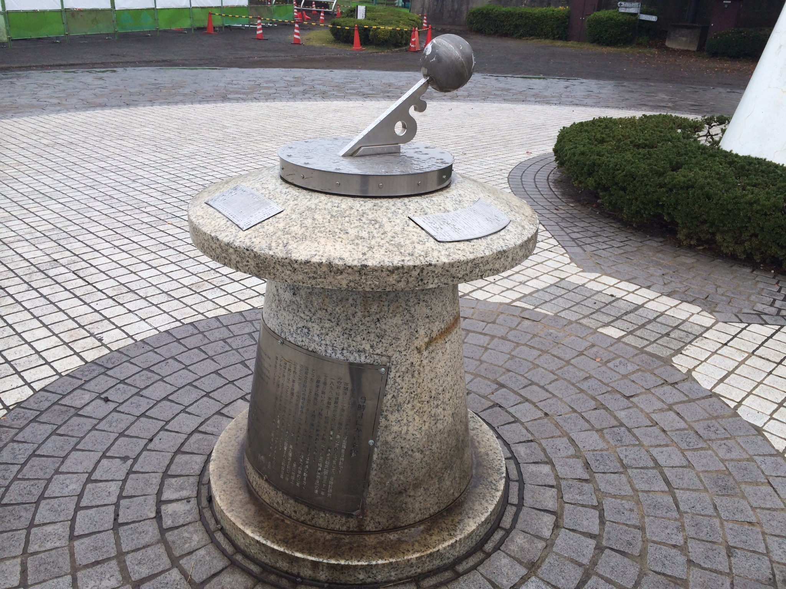
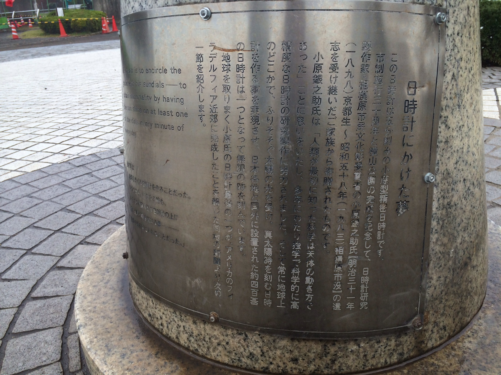
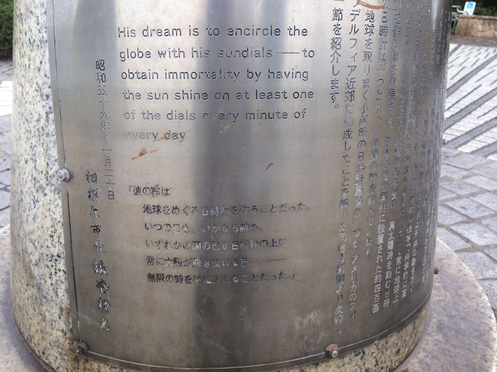

2015年3月5日(木)（12：30～）、相模Ingress部が本拠地を構える、神奈川工科大学情報学部棟（ポータル”中部謙吉翁”近く）において、「ITを活用した教育シンポジウム2014」が開催されます。
201室、15:40から以下の発表を行います。
“フィールドミュージアム構築における代替現実ゲーム「Ingress」の活用”
小瀬由樹，上石悠樹，長澤奏美，美濃部久美子，木村知之，○白井暁彦
〔資料公開〕 「フィールドミュージアム構築における代替現実ゲーム『Ingress』の活用」(Web公開版)
内容は今までの集大成、神奈川工科大学情報メディア学科白井研と相模原市立博物館のコラボ「スマ歩さがみはらプロジェクト」の、本年度おそらく最後の発表となります。
イベント、アンケートにご参加いただいた皆様、写真ご提供いただいた皆様、ありがとうございました。
論文等の公開も後日行う予定です。
お入用の方はTwitter@ingressbuまでご相談ください。
ところでこの手の発表って、受け入れてくれそうな学会とかありませんかね…？
「あるけ！イングレス部」Episode1『転校生は覚醒者』
「あるけ！イングレス部」Episode1『転校生は覚醒者』。


活動報告＠Twitter 02-05 – 02-11
- 記事を投稿しました！： 部員手帳Ver2.1完成！ http://t.co/e9i6yS5YtG 相模Ingress部 #Ingress 07:59:49, 2015-02-05
- 部員手帳Ver2.1完成！ http://t.co/cdaEIrmMjb 08:00:13, 2015-02-05
- 淵野辺駅発のMISSIONS「Save“Hayabusa”!!」をJAXA施設内に入る必要をなくし、設定しているポータル数を減らしました！ 14:19:21, 2015-02-05
- 2月7日に実施予定の「春よ来い！相模原Ingress豆まき！」ですが、荒天などで中止になる場合は以下のページでアナウンスします。 http://t.co/BpbxJufzsE 14:20:36, 2015-02-05
- 明日開催のIngress公式イベント「春よ来い！相模原Ingress豆まき！」に、淵野辺商店街の つるや呉服店さんからご協賛頂きました！ Ingress界初の呉服協賛！
https://t.co/jBAublvcEm http://t.co/4QFtsW3Zlx 20:29:26, 2015-02-06
- RT @o_ob: Ingress部員手帳届いた！！ これはアガる！
東奔西走した甲斐ある！！ http://t.co/piRJ4khOsb 20:32:08, 2015-02-06
- えっ！？ひな祭りとか？ …スミマセン、白井先生が泡吹いて倒れました！！ RT @Grape_at_night: @ingressbu 2/7の次の予定はいつになりますか？ in reply to Grape_at_night 20:49:39, 2015-02-06
- そうです！ いま受付キット制作しております！お会いできる事を楽しみにしております。雪でなくて良かった！RT @masataka2600: @ingressbu 申し込みをしましたが、とりあえず淵野辺駅に行けばいいんですよね。 in reply to masataka2600 21:26:33, 2015-02-06
- 記事を投稿しました！： 第2回準備ミーティング議事録公開！”豆まき”要素は低レベルエージェント向けアイテムのDROP 「鬼のように強い人は拾わないでね」 http://t.co/kLRGGtK1tw 相模Ingress部 #Ingress 22:18:30, 2015-02-06
- 第2回準備ミーティング議事録公開！”豆まき”要素は低レベルエージェント向けアイテムのDROP 「鬼のように強い人は拾わないでね」 http://t.co/o25WjypqoE 22:18:52, 2015-02-06
- 記事を投稿しました！： IngressFS「春よ来い！相模原Ingress豆まき！」直前連絡 http://t.co/NumsOahoIF 相模Ingress部 #Ingress 23:55:48, 2015-02-06
- IngressFS「春よ来い！相模原Ingress豆まき！」直前連絡 http://t.co/hAAs6YqN7H 23:56:09, 2015-02-06
- RT @o_ob: ふちのべIngress初詣(2015/1/4): http://t.co/TFquuDjU0H、@YouTube がアップロード 00:51:42, 2015-02-07
- 速報: ローソンばっかりだった愛川町に一気に30個ほどのポータルが生えたようです！ 01:09:49, 2015-02-07
- @Grape_at_night 参加可能です！こちらのフォームから登録お願いします！ http://t.co/CXD3pYAJ9X in reply to Grape_at_night 02:08:04, 2015-02-07
- Ingress公式初心者育成イベント「春よ来い！相模原Ingress豆まき」受付とグルーピングが無事終わりました。
この後は 11:55「鹿沼公園モニュメント」に集合＆記念写真→交流戦開始 14時博物館で豆まき開始 懇親会もありそう http://t.co/cTb8ncr58b 11:32:09, 2015-02-07
- なんと、NIANTICから送られてきた公式グッズのジグソーパズルにアイテムコードが仕込まれていた様子。
ボランティアスタッフによる”暗号解読班”が淵野辺駅前でハッキング中です。 #Ingress #IngressFS http://t.co/VqovSVxMsq 11:34:29, 2015-02-07
- RT @masataka2600: INGRESS First Saturday in Sagamihara (@ 淵野辺駅 (Fuchinobe Sta.) in 相模原市, 神奈川県) https://t.co/qP362KjFO4 http://t.co/Pxo9vy70… 11:48:27, 2015-02-07
- RT @machidakeizai: 相模原のイングレスイベントが2月7日、淵野辺駅周辺で行われます。今回が2回目。初心者育成が目的ということです。 ↓前回のイベント http://t.co/fKY3Lg9fW5 http://t.co/rsZSvJlubN 11:48:58, 2015-02-07
- だいぶ解けてきた http://t.co/cyyBQMANYT 11:52:12, 2015-02-07
- 世界初の呉服店でのIngress割引を頂きました「つるや呉服店」さん、ありがとうございました！
はやぶさ手ぬぐいに加えて、吊し雛もカッコイイ！
Ingress商品開発もご検討いただけそうです！ #Ingress http://t.co/fLVUY8ldho 17:50:27, 2015-02-07
- RT @Grape_at_night: @ingressbu 今日参加してよかったです～！おかげさまで、レベル２から４にあがりました。運営お疲れ様でした。 18:29:36, 2015-02-07
- RT @MarzzuoMethod: @MarzzuoMethod Ingress Badgeビーズ、Trekker Bronze(10km歩く)、Silver(100km歩く)、Engineer Bronze(150個Mod設置)。 http://t.co/rQy9VhwNrP 18:30:42, 2015-02-07
- 懇親会なうです！ 運営HOでは珍ポータル自慢が展開中 18:32:22, 2015-02-07
- グリフハック英才教育 http://t.co/LqDizHogNJ 19:06:14, 2015-02-07
- 昨日開催のIngress公式初心者育成イベント「春よ来い！相模原Ingress豆まき」 ご参加いただきありがとうございました #IngressFS 17Lv Up, 4,154,086AP UP, Sagamihara, JAPAN http://t.co/TNurLo2oCL 13:21:38, 2015-02-08
- RT @masataka2600: @ingressbu 次の予定が迫っているので早退しましたが、FSを楽しませていただきました。皆さんの活動が世界平和に繋がりますことを願っています。 13:24:46, 2015-02-08
- RT @JeenaAndow: 相模Ingress部のエージェント活動でした。公式イベントです。 #Ingress @ 相模原市立博物館 http://t.co/S9Ob03BjFX 13:25:28, 2015-02-08
- RT @johnnylish719: ingress相模原公式イベントお疲れ様でした。約100k以上のAPを稼がせてもらいました٩(๑❛ᴗ❛๑)۶ ingressやっぱおもしろい‼︎ http://t.co/YuuTWPPeYB 13:26:01, 2015-02-08
- RT @mizuyon: そういえば、今日相模原市立博物館に行ったらロビーに団体さんが！どうやら「Ingress豆まき」だったらしい。流行ってますな→Ingress http://t.co/LgG3eBp2DN 13:26:35, 2015-02-08
- 春よ来い！相模原Ingress豆まき！ 開催報告 http://t.co/kGI4BwD4Z6 10:01:59, 2015-02-11
- 記事を投稿しました！： 部員手帳Ver.2.2(文化庁メディア芸術祭出張版)公開！ http://t.co/Uc3N1hRj5k 相模Ingress部 #Ingress 10:08:10, 2015-02-11
- 部員手帳Ver.2.2(文化庁メディア芸術祭出張版)公開！ http://t.co/UbRQkCqJZ1 10:08:33, 2015-02-11

部員手帳Ver.2.2(文化庁メディア芸術祭出張版)公開！
「Ingress」は第18回文化庁メディア芸術祭エンターテインメント部門大賞を受賞し、現在、国立新美術館（東京・六本木）にて「受賞作品展」が行われております（2015年2月4～15日）
http://j-mediaarts.jp/awards/gland_prize?section_id=2
こちらに相模Ingress部「部員手帳」を配布していただけることになりました。


乃木坂近辺のポータルマップも掲載されています。
こちらからダウンロード！
IngressBookletV2.2forPrintSig

IngressFS「春よ来い！相模原Ingress豆まき！」直前連絡
こんばんは。
無事卒業発表を終えました。相模Ingress部 小瀬です。
この投稿は2015年2月7日開催の「春よ来い！相模原Ingress豆まき！」の参加者の皆様向けのリマインダ情報です。
明日の予定，主に受付関係の情報をお送りします。
受付場所：JR淵野辺駅改札「宇宙兄弟の看板」前
当日、車でお越しになる予定の方は最終到着地である「相模原市立博物館」に駐車することをオススメいたします。

受付時間：10:00～12:00 （わかりやすい色をしたスタッフが看板もって立っています）
Yoshiharuさん謹製の名札とエントリーカードにご記入いただいて受付スタッフがチェックイン確認をした方から、グループリーダーへの引き合わせをいたします。
☆「グループリーダーへの引き合わせをいたします」とありますが，実際にはグループリーダーもしくはサブリーダーさんたちで，うまくグループ編成をお願いすることになると思います．「宇宙兄弟看板前」の滞留はご遠慮ください．

※これ以降の写真はGoogle公式の記録、また「スマ歩相模原プロジェクト」の広報等にも使用されますので、顔を出せない人は「撮影不可！」 をわかるように赤字で記載してください。
このとき，以下のアイテムを受け取るのを忘れずに！
(1) 名札＆バッジストラップ
(2) スコアカード
(3) 相模Ingress部員手帳v.2.1
(4) 「春よ来い！相模原Ingress豆まき！」プログラム
(5) Ingress公式FSグッズ「アイテムカード」
(6) Ingressロゴシール
「アイテムカード」は10:00以降、到着＆チェックインされたかたから希望のアイテムをお渡ししていきます。
そしてアイテムパスコード入りカード。 新アイテムAXAシールドに加えてキャラ絵もあってカッコいい！ #IngressFS pic.twitter.com/jbroVK5KNc
— 相模Ingress部 (@ingressbu) February 2, 2015
【アイテム内訳】
(A) アイテムカード：AXA SHIELD ×10
(B) キャラクターカード：ADA ×10
(C) キャラクターカード：MISTY HANNAH ×10
(D) キャラクターカード：HANK JOHNSON ×10
(E) アイテムカード：RESONATOR ×20
(F) アイテムカード：POWER CUBE ×20
(G)アイテムカード：XMP ×20
(H) カラーシール：Ingressロゴマーク ×20
(I) カラーシール：レジスタンスマーク ×15
(J) カラーシール：エンライテンドマーク ×15
☆アイテムカードにはゲーム内で使用できる秘密のコードが記載されています。
その後、各サブリーダーさんと、淵野辺駅北側の商店街「にこにこ星ふちのべ商店街」ミッションなどがおすすめです。
https://www.facebook.com/nikonikoboshi.fuchinobe
「はやぶさグルメマップ2」PDF
http://pr.city.sagamihara.kanagawa.jp/topics/28678/23110/022782.html


第2部の開始予定時間は12:00に「鹿沼公園モニュメント前」集合し、記念写真 となります。
※顔バレ禁止の人はマスク等着用でお願いいたします！
さて、昼ご飯などを食べながら先輩エージェントとの楽しい自慢話・ご近所話に花が咲いたら、MISSIONS「Save“Hayabusa”!!」を開始しておきましょう。迷子になりませんし、最後にミッションバッジがもらえますよ！
12時 「鹿沼公園モニュメント前」で記念写真、その後スタッフがルール説明を行い，
13時 戦闘終了＆中間集計という流れです。
https://www.youtube.com/watch?v=pHGeiLsaASI ↑前回の初詣イベントの様子です（詳細こちら）
各自MISSIONSを使って、新田稲荷神社経由で博物館を目指しましょう。道中では車に気を付けて！いつもよりもたくさん人がいるのでより注意です。ゴミ拾いなどの街の美化にもご協力ください（コンビニ袋とか持ってゴミ拾いしていると集団でも怪しまれません）。途中，ポータルの少ない場所もありますが、JAXA相模原キャンパスが見えてきたら、もうすぐです。交通法規は守ってくださいね！子供も見ています！
第3部は博物館地下の大会議室でお楽しみ会です。トイレを済ませて、早く着いた人は館内見学をどうぞ。館内は一部電波状態が良くない場所もあります。Agentのステータス「All Time」のスクリーンショットを撮って15:00には会議室にお入りください（到着時に参加賞のプレゼント予定）。終了予定時間は15:00となります。
懇親会についても有志により17時から淵野辺駅「土間土間」にて予定されています！
詳細は第3部にて！
以上です。
それでは、当日お会いするできることを楽しみにしています！
相模Ingress部 小瀬＆白井
活動報告＠Twitter 01-08 – 01-14
- 2014.50節が終了しました。
PA01-ALPHA-12(東京圏)のトップランカー、今週は相模原で活躍するエージェントが多数ランクインしています。おめでとうございます！ http://t.co/yYe9JAgQdZ 07:20:19, 2015-01-08
- 相模原の大本命、JAXA/ISAS「宇宙科学研究所」の入口に生えました！
ここは公開時間でなくてもハック可能です。先日のIngress初詣でも記念写真を撮りました。Missionも更新しますね
#Ingress #新ポータル情報 http://t.co/mG3go7AsUD 08:44:35, 2015-01-08 - おめでとうございます！新磯エリアですね
細かい情報求む！
年末Seer申請には間に合いましたか？ RT @edelweiss_zzz: @ingressbu ウチで申請してたポータルも今日出てきたようです http://t.co/4O6nSwx9Gn in reply to edelweiss_zzz 08:52:58, 2015-01-08 - 記事を投稿しました！： 相模Ingress部 ふちのべIngress初詣レポート&アンケート結果発表 http://t.co/r8pxMdZnfj 相模Ingress部 #Ingress 11:28:29, 2015-01-09
- 相模Ingress部 ふちのべIngress初詣レポート&アンケート結果発表 http://t.co/1hrTKeId7T 11:28:55, 2015-01-09
- RT @o_ob: というわけで東京圏で15位になりましたのでご報告。
夫婦揃って高ランカー達成、かつ他のIngress部員のCFを荒らさない完全なソロ活動。かつ卒論ガチ指導の合間。
http://t.co/Pr8e8TptrQ
低Lv上位狙いが面白い。 http://t.co… 12:17:11, 2015-01-09 - Ingress v.1.67.2がリリース、起動時に利用規約とプロモーションメールへの登録を表示
規約自体は変更はなく2013/11/3版です
https://t.co/jcx5EBVIBk
#ingress http://t.co/0TO8A4Z2OB 08:34:26, 2015-01-11 - 相模原市内各地では緑の生ポータルを焼き払うイベント「どんど焼き」が開催されております。
#ingress http://t.co/DhweDJZjzC 10:12:55, 2015-01-11 - Ingressの良い面と悪い面を取り扱った記事は珍しいですね！ 朝日新聞デジタル：イングレス 陣取りゲーム、社会に影響 – 香川 – 地域 http://t.co/Gjbz6Kay9c 11:02:24, 2015-01-14
- 先生が現在、卒論指導しながらランカーを狙う偉業に挑戦中です！(現在50位) 22:16:49, 2015-01-14
活動報告＠Twitter 01-01 – 01-07
- あけましておめでとうございます！
相模原市内は緑勢の巨大多重CFで2015年が幕開けしました。現在、神社中心に攻防があり雪の中のIngress祭りの様相です。
今年もよろしくお願いします！ http://t.co/jFIjKLwMh0 14:31:09, 2015-01-01 - 2014年最後期と思しき現在の東京圏(PA01-ALPHA-12)のセル内ランキングです。青優勢ですが、ランキングは相模原の緑A11 shiorinneさんがトップ獲得、A7のconnecoさんが26位と大健闘です。 #Ingress http://t.co/X9ibXTWdol 18:28:36, 2015-01-01
- 記事を投稿しました！： 活動記録： 2014-12-25～31 http://t.co/5GPLGM6bdb活動記録：-2014-12-25～31/ 相模Ingress部 #Ingress 23:35:30, 2015-01-01
- 活動記録： 2014-12-25～31 http://t.co/LHCVWN6bxF 23:36:06, 2015-01-01
- 記事を投稿しました！： 相模原市内の年末戦線レポート http://t.co/LJLhNXT9Ky 相模Ingress部 #Ingress 00:45:18, 2015-01-02
- 相模原市内の年末戦線レポート http://t.co/mypJSSzg5i 00:45:48, 2015-01-02
- RT @o_ob: 「三角点」というポータルを見つけたので調べてみたらまさに相模#Ingress 部だった．鳶尾は工科大，長津田は東工大／ 「一等三角点」相模野基線を尋ねる（日本山岳会・2001年5月26日）http://t.co/Lfeuv7HlYZ http://t.co/… 00:54:02, 2015-01-02
- 圏央道厚木PA(南向き)にある新ポータル「ざまりん」を攻略にやってきました。近所のポータルにいいリンクが張れそうです…が、長年緑で安定していた座架依橋ファームが「座架依橋攻略戦」というミッションの誕生により、大変不安定に。 http://t.co/TVroHZGrHv 10:41:58, 2015-01-02
- 厚木PA「ざまりん」は実は似たような絵タイルがたくさんありました。座間の大凧の眺めが良さそうなトイレ、B1グルメ関係の軽食、テイクアウトコーナーなどもあります。 http://t.co/OBQgJi3wvF 10:55:31, 2015-01-02
- 海老名サービスエリアにも3つほどポータルがあります。
ところでXMの正体はなんなんでしょうね…？「Android携帯の通信パケット」という説が有力ですが、このパーキングエリアの様子を見ると「ガソリン」と言われても信じてしまいそう。 http://t.co/oVxscOMQZN 11:47:24, 2015-01-02 - 相模大野に近い16号「中和田」交差点がポータルキー交差点になってますね…。 http://t.co/LKpXyEJWVR 21:38:28, 2015-01-02
- 記事を投稿しました！： ふちのべIngress初詣 ご挨拶交流戦暫定ルール発表！ http://t.co/EBgS37UsGy 相模Ingress部 #Ingress 22:57:44, 2015-01-03
- ふちのべIngress初詣 ご挨拶交流戦暫定ルール発表！ http://t.co/ViKcpFFBrM 22:58:09, 2015-01-03
- 相模Ingress部 初詣イベント準備開始しております。
博物館前には賀詞ポータルキー交換会の準備が。市内のポータルキーをどんどん置いていってください！残ったら博物館の収蔵物にします！
#ingress http://t.co/tzpgvFrNuu 10:32:19, 2015-01-04 - 受付開始です
すごいことになってきた！ http://t.co/dXCdWh4HnD 12:41:26, 2015-01-04 - 鹿沼公園での交流戦が終わりました！
いい感じにXMPが届かないバトルフィールドです。
ミッション「Save Hayabusa」とともにお楽しみ中！ http://t.co/HGfHUTrdkc 13:55:50, 2015-01-04 - 新田稲荷神社・呼ばわり山で初詣中です
記念写真は後ほど公開 http://t.co/UOlPBcIHWK 14:18:13, 2015-01-04
- ものすごい数のお年賀ポータルキー！！
貰ったら地元の鍵を置いていきましょう。神社の絵馬やお札焼きみたいですね^_^ http://t.co/fOHd4fXyfo 17:11:41, 2015-01-04
- 相模原市立博物館前に全国のポータルキー達が…！ 皆さんありがとうございます。 #Ingress http://t.co/mXxKT5NrgN 19:47:52, 2015-01-04
- 海外のポータルキーも置かれています。博物館のポータルキーがあればどなたでも見ることができます！
拾いに行くときはその分置いていってくださいね！ #Ingress 19:53:12, 2015-01-04 - RT @kajiki_m: 相模Ingress部イベント終了して駅へ向かい中。面白かった。 #ingress 20:25:46, 2015-01-04
- RT @kajiki_m: しかし今日もレベル15だったり月の踏破距離が4桁余裕で越えてたりガチな方々にお会いしたがああいう人らはほんとすげえな… #ingress 20:26:00, 2015-01-04
- RT @_red_glass: 相模ingress部イベント参加中！レベル4に上がりました(^o^) http://t.co/mZsYpSbFO4 20:26:25, 2015-01-04
- RT @fphantom: 今日は早起きしてなにをするのかといえばIngressです。相模Ingress部のイベントに参加してきます。 20:26:37, 2015-01-04
- RT @laresjp: 鹿沼公園とか、いきなり激戦区w
『 ふちのべIngress初詣 ご挨拶交流戦暫定ルール発表！ | 相模Ingerss部 http://t.co/KM8N0ixn6w 』 20:26:44, 2015-01-04 - RT @tokumi2: やはり市立博物館は休館だよな…とか眺めてたら発見。
何か面白そうなことやってるな……。
いいなぁ〜(>_<)相模Ingress部 潤水都市をMXで照らせ！
http://t.co/yBYKGBGn3Y 20:26:52, 2015-01-04 - RT @Cero_tw0127: 東京湾が凄い事になってますが、お隣の相模灘の様子もご覧ください #ingress #イングレス http://t.co/x3g3b55Lka 20:27:18, 2015-01-04
- RT @o_ob: 相模Ingress部「ふちのべ初詣」イベント無事終了。子連れ市街地戦あり初詣あり科学解説あり調査あり卒論発表ありお年賀交換ありポータルキーの博物館収蔵化ありの楽しいイベントでした。ご参加いただいた皆様大感謝です。
ことよろです！ http://t.co/HS… 20:27:37, 2015-01-04 - RT @_red_glass: 本日の相模ingress部のイベント、充実しておりました！JAXAの中にもお邪魔できてびっくり〜(^_^)けっこう歩いたので明日の朝筋肉痛が心配w #ingress #相模ingress部 http://t.co/43SxKW0UQ6 22:01:24, 2015-01-04
- 新ポータル速報
「道保川公園」「四阿(あずまや)」「ホタルの里」「道保川公園のトラ」の4つがまとめて生えました。
相模原の段丘を使った大変美しい公園ですが、園内は冬季16時閉門、七曲り坂という難所があるトレッキング向きポータル群です。 http://t.co/vU5uKJJPcO 22:12:13, 2015-01-04 - 海ほたるの東京湾大花火もすごいけど、相模湾もすごい、南房総もすごい。
緑も道志村で何かヤバめの長距離リンク張っているけど、何より相模原のL8以下がこのセルでランク上位に何人もいるのがすごいと思いました。
#ingress http://t.co/MUTDOCgacT 22:35:21, 2015-01-04 - Ingress初詣、無事終了。 http://t.co/TJ7FQ7cVsM 23:23:53, 2015-01-04
- 東京湾寒中水泳大会が…まだ続いているのでしょうか…。
羽田空港と八景島に集中リンク合戦。他は相模湾と房総、富士山西-大井川、奥多摩もデカイです。
#Ingress http://t.co/6UFIF34tES 18:32:45, 2015-01-05 - 道保川公園に新しくできたポータルのおかげで美しい多重CFが張れるようになりましたね！ http://t.co/9XN475zcDz 21:50:24, 2015-01-05
- @yh1224 「道保川公園のトラ」、写真を見ると他に2名が申請していたようですね。ポータルはそのエリアでまとめてはえるようですが、申請から4日はラッキーですね。
小径との多重CFが開発されたことで今後も激戦区になりそうです！ http://t.co/X6GuEsBfSn in reply to yh1224 22:36:05, 2015-01-05
- ちなみにこの付近(星ヶ丘くら寿司裏)は朝夕は幼稚園の送迎があり、駐停車禁止、一方通行推奨です。
無用なトラブルを避けるためにも時間帯には気をつけましょう。 22:40:33, 2015-01-05 - 一方、道保川公園の新ポータル「四阿(あずまや)」と「ホタルの里」は夜間は入れません。
公園駐車場から上の2箇所を攻略する場合、"七曲り道"という相模原でもゆびおりの難所を登る必要があり、ドライビングレス勢には難度高いですね^_^ http://t.co/dsJFHNLLZO 22:45:53, 2015-01-05 - RT @syori: @ingressbu ドライビング難易度という点では貴部のblogで紹介されていた狸菩薩がかなり厳しかったです。相模原じゃNo1ではないかと密かに思っております。普通車で侵入して泣きそうになりましたw 22:55:17, 2015-01-06
- ローソンと仲良いIngress民に喜ばれるプレゼントを見つけました。
MACHI Cafeのプリペイドカードです。3000円で200円のプレミア付き。Ingress特製デザインとかあればいいのにね
#Ingress http://t.co/BAgQiDXk9g 00:26:20, 2015-01-07 - RT @o_ob: そういえばTポイントカードやPONTAカードは個人の消費動向が企業側に丸分かりしてしまうので意図して使わないようにしてきたのだけど、Ingressでローソンに付き合うようになってから、むしろ自分がどれぐらいリアル課金に貢献しているか調査するためにもPONTA… 00:32:06, 2015-01-07
- Ingress ver.1.67.2 for iPhoneがリリースされました。
新メダルとBug修正とのこと。自動更新ではなくiAppStoreから更新必要です。
#Ingress http://t.co/PSPw5dXfbe 00:36:50, 2015-01-07 - 新ポータル発生「魚の群れ」、これは水郷田名の相模川ふれあい科学館ですね！ http://t.co/bgXni7ALsx 07:38:37, 2015-01-07
- 新ポータル情報「日枝神社」
これは作の口陸橋上り側ですね。 http://t.co/Ol8DOOv8ej 07:58:32, 2015-01-07 - #新ポータル情報 相模原駅前(清新)エリア
「比丘口公園」「Bikuguti Park」「リバティタウン中央の壁画」。
当地域が魚を入れる「ビクの口」に似ているところから、ビクグチ＝比丘口
http://t.co/VVm9bCw8wo http://t.co/p9cdAXMXLR 08:25:47, 2015-01-07 - #新ポータル情報 相模原駅前エリア
「JNファミリーの蛙の石像」
16号線との交差点です。
ずいぶんと相模原駅前が賑やかになりましたね！ http://t.co/Ok4DjiCq1J 08:28:04, 2015-01-07 - 今日は新ポータルがたくさん生えていて、相模原に"春の訪れ"を感じます。
キャプチャ前の"自然の生ポータル"を誰よりも先にリポートし続けるのは、結構な努力が必要なのですが、応援いただければ幸いです。
「いつ生えた！？」を記録するのが大事と考えております。
#ingress 08:32:33, 2015-01-07 - 「清新(せいしん)」の地名は、1843年（天保14年）～1856年（安政2年）、原清兵衛氏が開拓した地域を「清兵衛新田」と称し略して「清新」。ここ「比丘口」は魚を入れる「ビクの口」に似ているところからビクグチ＝比丘口になったとのこと。
http://t.co/VVm9bCw8wo in reply to ingressbu 08:36:45, 2015-01-07 - #新ポータル情報
「ウェルネス相模原」
市役所の交差点です。 http://t.co/bql6jQFAQP 08:45:04, 2015-01-07 - RT @fairoo: 最近ようやくグリフハックを知って、可能なときはぐりぐりしています。今日もやっていたらグリフが
"ALL FUTURE PATH"
となって、「何があった未来！！」と思わず呟いてしまったり。結構おもしろい文章できてたりしますよね。 #ingress 14:34:00, 2015-01-07 - RT @fairoo: 何かのレポートって、その日のうちに書かないと絶対書かないよな自分と思って色々思い出せるだけ書いてみた。｜相模Ingress部さんの初詣イベントにおじゃましてきた。 https://t.co/bdxE0aRfeW #ingress 14:34:36, 2015-01-07

活動記録： 2014-12-25～31
- @IngressIn Ingress速報 なかのひと様。いつも貴メディアの記事には楽しませていただいております。この度、私達相模Ingress部で以下のプレスリリースをさせていただきました。貴メディアで取り扱いいただけると幸いです。 http://t.co/8cJvJIPavN 00:44:55, 2014-12-25
- RT @o_ob: 2014年の講義最終日直前に まさかの大学内ポータル「中部謙吉翁像」が生えました！申請して良かった！ っていうかこの写真撮っているエージェントってうちの学生？ 毎日出席カードのついでにハックできるようModsは盾ではなくファーム系で！ http://t.co… 01:19:09, 2014-12-25
- PA01-ALPHA-12、現在5位のエージェントさんと深夜のローソンで会合。 やはり相模原は広域CFに適したフィールドらしいです。 1/4のIngress初詣にも来てもらえるようにお願いしました！超上級エージェントさんのテクニックを学ぶいい機会ですよ #Ingress 03:38:51, 2014-12-25
- RT @o_ob: つまさきおとしとIngress部！掲載感謝です／神奈川県相模原市でIngress初詣イベント！！ 神奈川工科大学・市立博物館の有志が企画 – ねとらぼ http://t.co/ykD2MnXVaR @itm_nlabさんから #Ingress 15:09:37, 2014-12-25
- ご掲載ありがとうございます！／神奈川県相模原市でIngress初詣イベント！！ 神奈川工科大学・市立博物館の有志が企画 – ねとらぼ http://t.co/IyF1PrCC8N #ingress 15:22:14, 2014-12-25
- RT @scm_sagapon: 博物館の職員ブログが更新されたよ～: 横須賀市Ingress体験ツアー http://t.co/nAGFr3ekyH 19:11:08, 2014-12-25
- RT @mask303: 読んだ。すごかった…！RT @saint_oniisan: 話題の位置情報ゲームに聖人たちも夢中。『聖☆おにいさん』最新話は本日12月22日発売のモーニング・ツーにて。 http://t.co/WJrlxoxtI2 #ingress http://t.… 08:40:39, 2014-12-26
- 先ほど記事投稿と取材対応が混ざり、一部お見苦しい投稿がありました。再発防止をし、削除いたしました。 この場をお借りしてお詫びいたします。 22:47:50, 2014-12-26
- 先日はインタビューありがとうございました！ 面白く、分かりやすく取り上げていただき、感謝感激です！ 【先生がガチ】研究室の学生と博物館職員がIngress部を立ち上げるまで – Ingress(イングレス)速報 http://t.co/195Wuiwhep 01:03:38, 2014-12-27
- 相模Ingress部は昨日から博物館で、とある機材の設置活動中。隣では標本作ってます。 http://t.co/5UvtlNFHBl 08:09:37, 2014-12-27
- 博物館での設営終わって物理的には仕事納め。ここから先がエージェント活動です。1/4の初詣イベントに備えて、徒歩での距離や、試合形式のシミュレーションなどを行いました。今回は20分で3万APほど育てました！ #ingress http://t.co/9oSGOgKzm7 20:51:25, 2014-12-27
- RT @o_ob: 相模原市立博物館、Ingress部以外の今年度最後の新作2つ、ExPixel対応クラウドサイネージと常設展示版の「全身・太陽圏」を構築中。 市民学芸員さんの紙芝居やってる。 ドームはポケモン新作が13:30から。 http://t.co/oiEq8VMSIo 20:53:57, 2014-12-27
- RT @o_ob: 首都圏セルで現在68位。もうちょいでランキングに表示されるね。相模原で名の知れたエージェントもチラホラ。 Intel report of agents in regional cell PA01-ALPHA-12. #Ingress http://t.co/… 20:54:01, 2014-12-27
- Kuusuke氏によるミッション「相模原町慰霊塔巡り」に挑戦しました！16号古淵から警察署、ラーメン一蘭近辺です。 祈平和…。 なかなか心理的に攻撃しづらいですね http://t.co/AnSDxxGJHz 11:21:45, 2014-12-29
- スクリーンショットを撮ってアップロードするだけでエージェント活動の記録を残せる「エージェントスタッツ」が日本語化されました！ https://t.co/Gp2vqXMxxc 翻訳ボランティアに感謝です。 ちなみにIngress部でもグループ運用中 #ingress 11:22:59, 2014-12-29
- 相模Ingress部、初詣の参加登録は明日締め切り！まだ若干名参加可能です http://t.co/tPBjwfjcYG 当日のコースを予習したい方のためにこの動画を紹介します！ http://t.co/KtCvyOjSJY #ingress 11:26:18, 2014-12-29
- RT @GorosanTei: 今日は朝から京都、滋賀、奈良のENLエージェントがてんやわんやでした。 大三角の中に、まだ中三角が潜んでいるという、スーパー多重CF。敵ながらすげぇことしやがる。大津から天理に通すか……。 #ingress http://t.co/dGB6JIO… 16:08:06, 2014-12-29
- RT @asakonoro: あるんだって！本当に！ #ingress http://t.co/PY01jhMfGv 16:11:05, 2014-12-29
- RT @Htok: これだけポータルが少ないと確かに 田舎AG「お願いです！このポータルはみんなで育てた大切な……」 都会AG「うるせえ！敵色ポータルは消毒だー！(XMPバーン)」 みたいなことになるよな。 #ingress 16:11:13, 2014-12-29
- 新春1/4の相模Ingress部初詣イベントがAppBankでされました http://t.co/mdYlM6xwTZ 参加登録は本日締切、初心者・家族連れ大歓迎、町おこしなど興味ある方のご参加お待ちしております！ http://t.co/tPBjwfjcYG #ingress 09:04:07, 2014-12-30
- 記事を投稿しました！： 相模原駅前エリアに新ポータルが続々登場 http://t.co/ebHfvjfZdj相模原駅前エリアに新ポータルが続々登場/ 相模Ingress部 #Ingress 09:49:44, 2014-12-30
- 相模原駅前エリアに新ポータルが続々登場 http://t.co/vZopHQeQ2Z 09:50:08, 2014-12-30
- RT @akira28_jp: Facebookの「イングレスお達者倶楽部（６０歳以上限定）」を紹介してあげて下さいw https://t.co/52MCZh9Agf #ingress / “#ingress でフルタイムのプロエージェントと出会った話 – on…” http:… 13:10:04, 2014-12-30
- 相模Ingress部 初詣イベント、おかげさまで予定定員を 大幅に 超えており、早めの締め切りを検討しております。 取材やどうしても参加したい方、青の初心者(1組)、家族連れなどお急ぎご登録ください！ #ingress http://t.co/tPBjwfjcYG 13:15:55, 2014-12-30
- ふちのべIngress初詣、満員御礼につき早めに締め切りたいと思います！ 取材希望などどうしても参加したい方はお早めにDMください #Ingress 18:28:41, 2014-12-30
- 相模原に新たに生まれた3つの教会ポータルでCF作ってみました。 #ingress #MissionsForGood http://t.co/QTy6JRUPVx 14:38:16, 2014-12-31
- #Ingress プレイスタイルいろいろ命名。 オジングレス:おっさんガチ勢 犬グレス:犬同伴 動かんグレス:リチャージ中心 チャリングレス:自転車/リアル課金 リア充バスター:カップル 餅つき:刺し担当+撃ち担当 八方リンク:初心者 発砲美人:爆破系女子 イングレちゅ:中毒者 16:02:48, 2014-12-31
- #Ingress #プレイスタイル命名 イソグレス: 急ぎハック通過のみ 通勤グレス: 電車から朝夕のみプレイ プログレス: 業務上Ingressに関わる人 ラーメングレス: ラーメン屋中心勢 登山グレス: 難所攻め中心 スナイパー: ウルトラストライクで一本づつ落とす攻撃を快感 16:17:32, 2014-12-31
- #Ingress #プレイスタイル命名 歩きングレス: trekker 乗りングレス: バスなど乗り物からハック 入院グレス: 病床につきリチャージ中心 沈ングレス: 広域CFマニア お遍路勢:神社仏閣中心 鍵守: ポータルキー1500個以上 帰省赤: 地元を荒らす第三勢力 16:38:42, 2014-12-31
- さて年明けカウントダウンまで、あと7時間ですね！ 今年最後のハックは何処で迎えますか？ みんなでCOMMでカウントダウンしたりして…。 #ingress 17:19:52, 2014-12-31
- 都会派の帰省。 1. 地元勢が「落とし辛い」と思っている定着ポータルがある 2. 帰省アカがCOMMで爽やかな挨拶、シレッと撃破 3. 当然L8にVRPS,AXAシールド設置 4. 地元勢に温かく保護されガーディアン達成 という流れが良いですね！ #Ingress 17:42:20, 2014-12-31
- 一方で、今日まで守り続けてきた寺院仏閣系は、まず諦めた方が良いかもしれないですね…！ 南無〜〜。 17:46:22, 2014-12-31
- 帰省アカ側「うむう、夏の帰省時は全然ポータルなかったのに、だいぶ増えたな…が！なんだこの軟弱なポータルは！なんだこの軟弱なシールドは！なんだこのダメリンクは！攻撃ってのはこうやるんだよ！多重CFはこうやって張るんだよ！」 …的な焼け野原です。 #ingress 18:16:47, 2014-12-31
- 寺院仏閣も教会も夜のお墓もクリスマスも年末年始も関係なく破壊の限りを尽くすエージェント様。 せめて除夜の鐘が鳴り響く間は 心静かに煩悩を忘れ ポータルを見つめてみませんか？ そう、そこは人々の信仰の場所 XMの泉なんです。 良い新年をお迎えください。 #ingress in reply to ingressbu 20:02:47, 2014-12-31
企画”記念の日時計”を探せ！
日時計が、相模原市に何個あるか、探してみませんか？
これは相模原市水郷田名、高田橋のものです。 
淵野辺駅南口、公民館前に設置されているものです。
{kind=link}
緑ヶ丘中学校横には大きい日時計があります。この近所には幾つかポータルがあります。
{kind=link}
{kind=link}
{kind=link}
やたらとあるこの日時計は「小原式日時計」というそうです。これは「横山公園」で発見しました。相模原市の小原銀之助氏の寄贈とあります。

{kind=link}
{kind=link}
{kind=link}
{kind=link}

相模原戦線に異常あり！重要ポータル情報
基本的に青がとても強いのが相模原の特徴ではあるのですが、 相模Ingress部が所属する「スマ歩さがみはら」の市役所での中間ヒアリング・プレゼンテーションが終わった2014年10月19日夜ぐらいから、なんだか大きく様子が変わってきました。

見やすくオーバーレイしてみてみました（上：10/13，下10/19）。

相模原市中央区の西側郊外は基本的に青が強かったのですが、現在は緑の強いプレイヤーに一掃されたようです。 相模原市中央区の駅前～市役所近辺も青と緑が接近しており、若干緑が優勢。
津久井エリアでは緑のプレイヤーがたいへん頑張っています。
青（レジスタンス）の拠点は、上溝，矢部，相模原公園，原当麻（無量光寺・一遍上人），相模大野など都市エリアおよび集落に集中している特徴があります。こういった集落を結んだ領域（CF；Control Field）は人口密度が高く得点（MU；Mind Unit）が高いです。
緑（エンライテンド）がもし、田名から西側のエリアを入手し、愛川町～津久井までのエリアにCFを張ると、さすがにこれは大きいと思います。
田名～上溝間にはポータルがないので、北公園～上溝～原当麻～座間キャンプまでの「相模線沿線戦線」は今後重要な戦局を迎えることが予想されます。
【重要ポータル情報】
- 津久井湖畔のポータル群
- 久保沢観音堂 市登録有形民俗文化財 緑区久保沢2丁目2067番1
- 小川勇夫先生之像 元市長さんの像 緑区二本松二丁目 24-2
- ハックルベリー 緑区のレストラン 緑区城山4-2-10
- 作の口モニュメント
- 上溝商店街
- ちとせ橋付近の「碑」 上溝～亀ヶ岡付近
- 当麻・無量光寺，一遍上人近辺のポータル群
- 相模原市田名の鮎供養塔，狸菩薩
- 座架依（ざかえ）橋のポータル群
- 依知（えち）神社
これは盛り上がってきましたね！今後の戦況を見守りたいと思います！